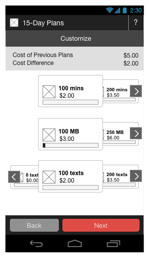
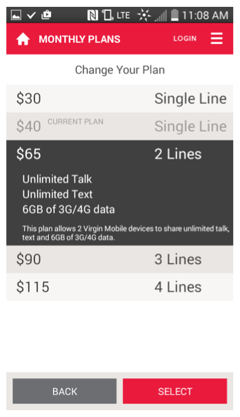

Customers may want to upgrade or downgrade their plans for different reasons. For example, they may have a recurring 50MB/month data plan and find it insufficient for their needs. Or they may have purchased a recurring 2GB/month data plan and find that they are never using more than 200MB of data per month. Rather than requiring customers to cancel plans that they have purchased and to buy brand new ones (which may require having to pay for both in full), Service Design Center provides two special categories specifically for allowing plans and compound bundles to be exchanged directly. These categories are the CAROUSEL category and the ACCORDION category. They provide direct upgrade and downgrade paths for plans and compound bundles. Customers have more power because they have a flexible and transparent upgrade/downgrade path for their products that is clear and easy to use.
The following table illustrates the differences between carousels and accordions.
| Carousel | Accordion |
|---|---|
| The illustrations below give you a general idea of how carousels and accordions are presented on devices. The colors, styles, and branding will likely be different for different tenants and partners, but the ways that users interact with each type of presentation will be the same. | |
|
 |
 |
|
|
These special categories are a way to manage your customers' ability to exchange one plan for another of a similar type (voice, messaging, or data) or to exchange bundles. More specifically, they provide an upgrade and downgrade path from products that customers have already purchased and are using.
All products in a carousel sub-category or in an accordion category must:
Compound bundles in carousel sub-categories and accordion categories should have the same number of products in each bundle, and each product should follow the above guidelines.
In addition, fees, eMoney, external products, preferred destination change fees, and basic bundles are not allowed in exchange categories. If any of these products are in an exchange category when you promote a change that includes that exchange category, the promotion will not be allowed and you will see an error.
For both plans and bundles, Compatibility of Plans and Bundles in Exchange Categories explains in more detail how setting changes affect exchangeability.
Sub-categories of the CAROUSEL category that are specifically configured and that are made children of the CAROUSEL category allow customers to exchange products within those sub-categories. To create these special sub-categories:
Here's an example:
| Category Name | Category URL | Child Categories |
|---|---|---|
| CAROUSEL | /carousel | VOICE TEXT DATA |
| VOICE | /carousel/voice | n/a |
| TEXT |
/carousel/text |
n/a |
| DATA | /carousel/data | n/a |
If you add sub-categories to the sub-categories of the carousel category or sub-categories to the accordion category, and then add products to those sub-categories, the display will "flatten" all the combined products in those sub-categories and display them as a single list.
All carousels have the same cycle length and are aligned with each other. When a product is added to a carousel, its proration setting is overridden when the product is received through the carousel. If a customer is missing a subscription that is offered in an exchange group that is within in a carousel and subsequently purchases a subscription, the purchase is automatically aligned and is not prorated. If you add a category to an existing carousel, if a customer cancels the renewal of a carousel product, or if a customer service representative terminates a carousel product, subsequent purchases from the carousel are automatically aligned and are not prorated.
When you offer renewing products in your catalog, a tenant setting defines product behavior when there are not enough funds in an account balance or from the account payment method to pay for the next cycle. Typically, either the product is dropped or the account is suspended. If the setting is account suspension, no plans in the account can be used. If the setting is plan drop, the result is different for a single product (only the product that cannot be paid for is dropped) than for a product in a carousel (all products in the carousel are dropped).
When customers have products in a carousel, if this behavior is triggered for one product in a carousel, it is triggered for all of them. For example, a customer has 3 carousel plans, a $5 voice plan, a $5 messaging plan, and a $10 data plan, and the monthly amounts are taken from the account balance, which the customer occasionally tops up. At the end of one cycle, the account balance is $18, which is not enough to pay for all the plans for the next cycle, so if the tenant setting is plan drop, all plans in the carousel are dropped.
Or if payment was via a credit card in the account, but the credit card expired and the customer had forgotten to update the credit card information, no payment for any of the plans could be processed, and again all the plans in the carousel would be dropped.
In other words, a set of products received through a carousel is never partially fulfilled.
These special categories also allow you to group compound bundles for exchange. Because bundles can contain different types of plans, a bundle upgrade or downgrade isn't as simple as a single product exchange. For best results, the compound bundles you add to a category for upgrading and downgrading should have: